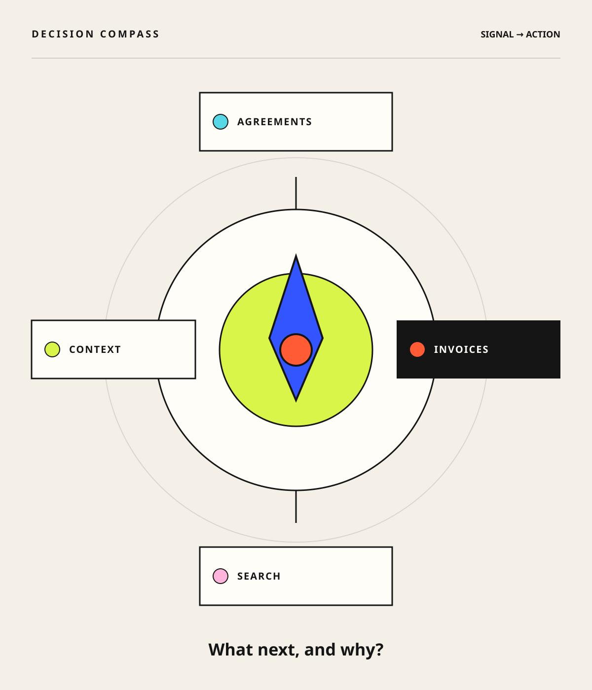

Stable customer context
One traversal anchor keeps the result model consistent, whichever way a seller searches.
Case 02 · Systems · Decision support · 2025–2026
I reshaped fragmented commercial data into one coherent decision surface for enterprise sellers, spanning search, agreements, subscriptions, renewals, pricing, proposals, invoices, and history.

Sellers had to piece together agreements, subscriptions, renewals, concessions, pricing, invoices, proposals, and commercial history from fragmented sources. Left alone, the product would have become a set of disconnected reports shaped by backend structure, with redundant history, unclear naming, and gaps in the data.
I helped reframe the product, explored search and information architecture, challenged low-value or unsafe detail, partnered on seller validation, and shaped the agreement, invoice, pricing, proposal, history, renewal, and concession patterns.
I mapped customer, billing account, billing profile, agreements, subscriptions, proposals, orders, invoices, amendments, and renewals, then built the hierarchy around three questions: what does the customer have, what needs attention, and what can the seller do next?
One traversal anchor keeps the result model consistent, whichever way a seller searches.
Use authoritative platform data, with deep links where local detail is incomplete.
Preserve agreement transition context while hiding or phasing low-value history.
Sellers get back to up to ten recently entered billing accounts, saved per user.
Keep the hierarchy, filters, disclosure, and authoritative exits.
Billing-cycle and profile relationships carry different intent and governance.
Sellers find invoices without profile knowledge, and still see the profile for payment context.
Showing legacy data is not a reason to duplicate confusing or incomplete data.
The first release limited cloud and channel scope and kept every dependency explicit.
Seller questions, prototypes, selective rollout, and telemetry guide each decision.
A coherent product can span several surfaces when users keep their orientation and know which source to trust.
Specifications and UX walkthroughs were complete for three priority fundamentals, ready for engineering review and estimation.
Engineering needed complete mocks, screens, controls, and functional specifications before development review, so design readiness gated estimation.
Search definitions, source entities, modern and classic behavior, filters, recent accounts, and agreement-transition logic all got worked through with engineering.
The team now shares a product narrative built around seller decisions and foundational capabilities, along with concrete IA choices for agreements, invoices, billing profiles, renewals, history, and source-system links.